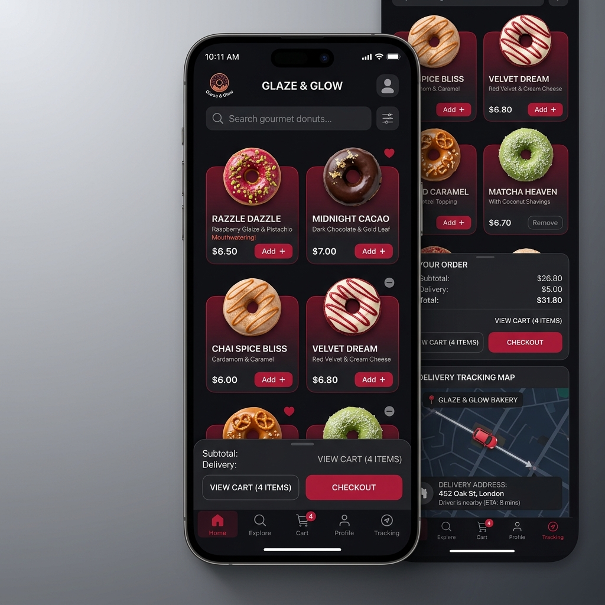

Donat App — Food Delivery & Bakery Mobile App
Class / Practical Assignment

Project Evaluation Q&A
1. Project Summary
A Flutter-based mobile ordering and delivery application designed for food businesses, featuring product catalog screens, cart management, checkout forms, and real-time delivery state simulation.
2. Project Type
Class / Practical Assignment. Created to practice high-fidelity mobile UI assembly and client-side transaction flows.
3. Team & Role
Individual Project. I engineered the mobile frontend, client-side state machine, cart item structures, and ordering flows.
4. Key Contributions & Impact
Built a highly responsive mobile checkout and shopping cart flow with local state synchronization, demonstrating production-ready mobile frontend practices.
5. Learnings & Takeaways
Gained hands-on experience in user-centric mobile layouts, local persistence, shopping cart state management, and fluid UI animations.
Technologies
Flutter, Dart, Shared Preferences, Git.
Key Skills Demonstrated
Mobile Frontend Design, Local State Synchronization, Cart Event Management, Animation Interpolation.